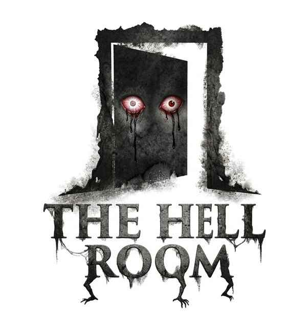

Rekaman Handycam · 1996
Pilih Jernih HD kalau efek layar rusak membuatmu pusing. Garis, getaran, noise, dan kedip layar akan dihilangkan.
Setiap level juga menyimpan satu kaset VHS rahasia — temukan semuanya di menu Arsip. Waspadai pengumuman pengeras suara: kadang membocorkan posisimu, kadang mematikan lampu.
Kumpulkan semua sekring, pasang di kotak panel dekat pintu darurat, lalu keluar. Hindari penghuni sekolah.
| Komputer | |
|---|---|
| WASD + Mouse | Bergerak & melihat |
| Shift | Lari (berisik!) |
| C / Ctrl | Jongkok (senyap) |
| E / Klik | Interaksi |
| F | Senter |
| N | Mode malam kamera |
| Z (tahan) | Zoom kamera |
| G / Klik kanan | Lempar penghapus |
| Spasi (di loker) | Tahan napas |
| Tab | Tujuan |
| Esc | Jeda |
Setiap level dihuni satu penghuni dengan aturannya sendiri.
Si Pucat — buta, merangkak, mendengar segalanya. Jongkok dan jangan berlari.
Laba-Laba Kaki — sangat cepat. Begitu melihatmu ia mengejar sampai pandangannya terputus. Jeritan = ia datang.
Si Penganga — hanya bergerak saat tidak kamu lihat. Dalam gelap, tatapanmu tidak berarti.
Bayang Kelas — hanya hidup di gelap mal. Tetap di bawah lampu, sorotkan senter padanya.
Mata Papan — tumbuh di dinding ruang patung. Jangan berdiri lama dalam pandangannya.
Kelabang — banyak wajah, melihat ke segala arah. Putus pandangannya dengan dinding, dan jangan masuk air saat ia dekat (berisik).
Jam Kakek · Penenun Tulang · Gema Retak · Perempuan Gurita — menghuni lantai-lantai tanpa akhir. Dengarkan: detak jam, bunyi basah, bisikan.
Semua penghuni yang melihatmu akan langsung mengejar sampai pandangannya terputus atau kamu bersembunyi.
Berjalan & jongkok lebih senyap. Pintu yang dibuka-tutup terdengar jauh. Jangan masuk loker saat sedang terlihat. Di dalam loker, tahan napas ketika ada yang mendekat. Lempar penghapus papan untuk memancing penghuni menjauh.